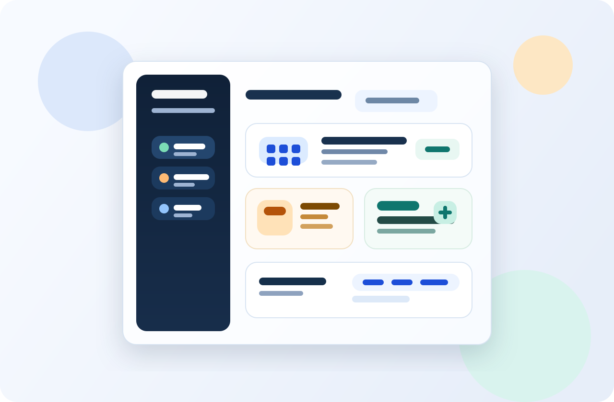
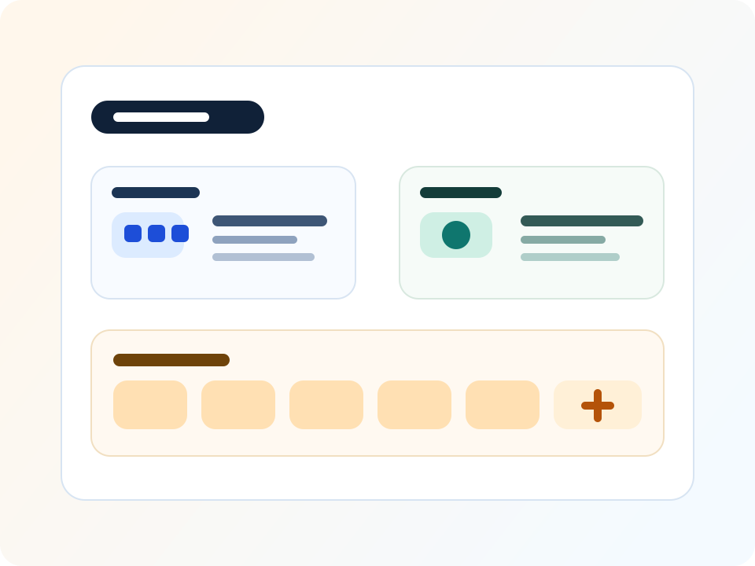
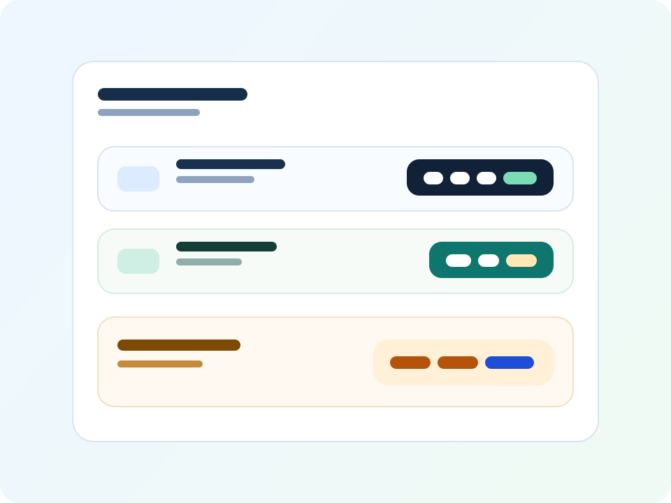

Fast Access
One-click launch from the menu bar
Keep your favorite apps in a compact launcher that is available from anywhere, without covering your desktop.
App Rack keeps your most important apps one click away in the menu bar, with search, categories, running indicators, quick actions, and global shortcuts that stay out of the way until you need them.

App Rack focuses on the small friction points that add up when you open the same set of tools all day. It gives you a tighter, calmer way to get to your apps without turning your Dock into a parking lot.
Keep your favorite apps in a compact launcher that is available from anywhere, without covering your desktop.
Running indicators and quick actions let you launch, quit, force quit, or reveal apps in Finder from one place.
Customize names, icons, layout, groups, categories, pinned apps, and shortcuts so the launcher matches how you work.
The app is designed to be lightweight, but it still gives you structure where it matters most: organizing, launching, and adapting.

Keep work apps, creative tools, utilities, and development tools separated into sections that are easy to scan at a glance.
Open the menu, type a few letters, or trigger a global shortcut when you want an app immediately, even if the launcher is closed.

App Rack includes the practical touches that make a launcher useful long term: quick actions, import and export, recent apps, and menu bar customization.
App Rack is built around local control and fast access. No accounts, no cloud dependency for the core workflow, and no extra noise between you and the apps you open every day.